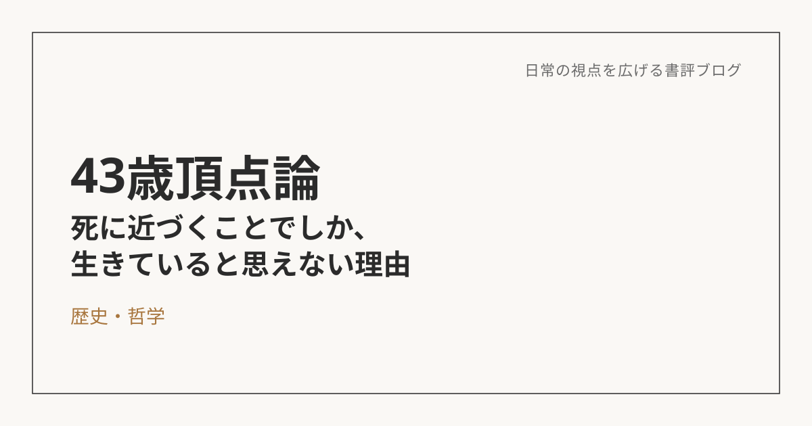

43歳頂点論――なぜ人は、死に近づくことでしか"生きている"と思えないのか
この本について
命の危険を伴う登山・冒険という行為に、人はなぜ挑み続けるのか。角幡唯介が自身の経験と考察で綴った一冊。「43歳が体力・精神面での頂点であり、それ以降は下り坂に入る」という著者の主張が、タイトルにもなっている軸だ。
生を求めるほど、死に近づいていく
冒険者にとっては、日常のありふれた生活の方こそが「死」に等しいのだという。経験を積むほど、挑戦するルートは未踏で危険なものになり、死のリスクも高まっていく。それは、なんの苦労もなく達成できた冒険より、死ギリギリのところでなんとか生還した冒険の方が、強い充実感を残すからだ。つまり、誰よりも生を欲しているからこそ、誰よりも死の可能性に自ら近づいていく、という矛盾の中に生きている。
これは、スケールはまったく違うけれど、自分にも分かる感覚がある。安全な登山より、精魂尽き果ててなんとか下山できた登山の方が、振り返ると楽しいし、充実感がある。近代化が進んで日常から死のリスクがどんどん遠ざかっていくほど、「生きている」という実感自体も薄れていく、という話にも納得感があった。
その欲求は、登山家だけのものじゃない
冒険や登山でなくても、自分という存在を主張したい、オリジナリティを発揮したい、他人とは違う自分でありたい、という欲求は、誰の中にもあるものだと思う。それは時に、死すら超越するほどの強さを持つものらしい。
自分の中にも、その感覚が無いわけではない。ただ、現実の生活や仕事といった「一般常識の価値観」を理由に、それを後回しにしてきた面がある。それは合理的な判断のようでいて、実は言い訳だったんじゃないか、と思う瞬間もある。一般的な価値基準ではなく、自分の軸で物事を追求できる人と、そうじゃない人の差は、何によって生まれるんだろう。生まれ持った気質なのか、後天的な環境の違いなのか――ここは今も、はっきりした答えが出ていない問いとして残っている。
「到達」から「漂泊」へ
正直に言うと、第2章以降は、著者の「43歳が頂点」という主張ありきで話が進んでいる印象を受けて、読み終えても、価値観を変えるほどの発見があったとは言い切れなかった。
ただ一つだけ、強く残った概念がある。若いうちは、自己の存在証明のように自然を自己に従わせようとする「到達型」。40代後半からは、逆に自然に従い、その中にいる自分を味わい楽しむ「漂泊型」へと変わっていく、という話だ。これは東洋哲学的な感覚とも重なって、素直に共感できる部分があった。
死のギリギリに近づくことでしか生を実感できない人たちがいる一方で、自分は日常の中にも幸せを見出せる方なんだと思う。その代わりに、「到達」ばかりを追いかけるのではなく、いまいる場所の中で味わい、楽しむという「漂泊」の感覚は、これからの自分にも少しずつ必要になってくる気がしている。
※本記事はNotionに書き溜めた読書メモをもとに、AIの編集サポートを受けて構成しています。